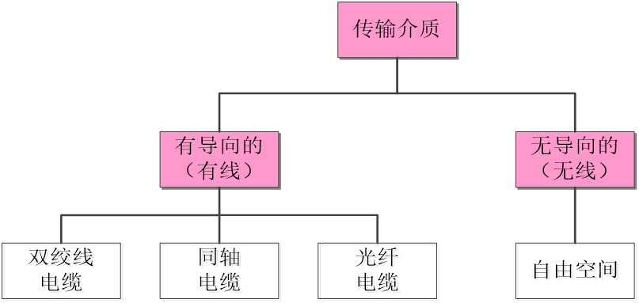
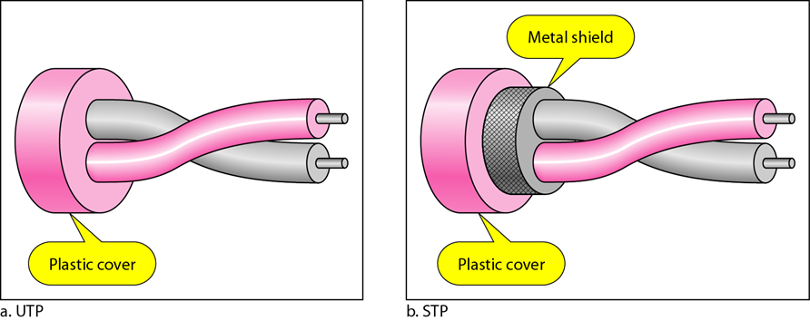
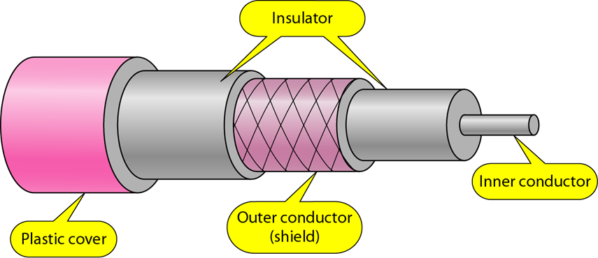
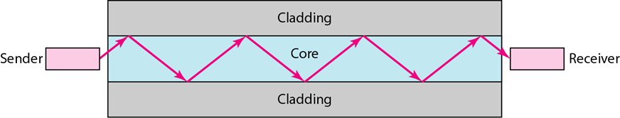
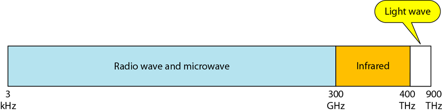
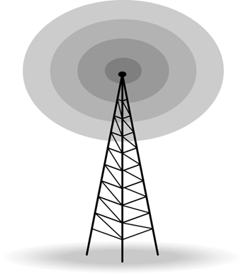

双绞线及其特点、同轴电缆和光纤的概念
有向介质是指那些在设备之间提供通路的介质，包括双绞线、同轴电缆和光缆。
绞合可以使两条线路同等地受到外部影响，这意味着接收方不会通过计算两者之间的差值接收到有害信号。
可以传输更高频率范围的信号
使用一根位于中央的实心或者多股绞合的核心金属丝导体（通常是铜的），导体封装在绝缘护套中，然后再把它封装在金属箔、金属网或者两者的组合成的外部导体中。
外部金属包装既可以屏蔽噪声，又可以作为第二导体，构成回路。
特点：
传输损耗小
抗雷电和电磁干扰性能好
不易被窃听或截取数据
体积小，重量轻
无线波谱、无线电波、微波和红外波
无线波谱图：
通常将频率范围在3~1GHz之间的电磁波称为无线电波。
大部分无线电波是全方向的。
可以传输很长的距离。
低、中频率的电波，可以穿透墙体。
无线电波用于多播通信，如收音机、电视以及寻呼系统。
